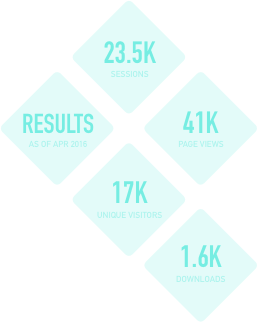

Born from a dissatisfaction with the status quo in CSS grid frameworks, Christopher Muller was looking to create a framework that did away with all the heavy complexities of other frameworks. A framework that was light and flexible.
Neutron lives in a crowded market of other me-too frameworks. It needed a branding that was strong and powerful. Something that stood out amongst the rest.
As this was a personal project with a friend, this gave me a lot of freedom to explore different avenues without the restrictions of harsh deadlines. Early on we settled on a space theme for the name, because space is cool! An early name being thrown around was Pulsar, a type of neutron star. It was this name that lead to us picking Neutron as the name. Having a strong name made creating a logo easy. It was all a matter of breaking down what a neutron actually is, which nicely shows how modular the framework is.
For the colour palette I wanted something dark and futuristic looking. Tron was good inspiration for this.
My final part of the project was to build the website. I used the Neutron framework to build the site, which made development a lot easier. Through user testing it was found the dark look did not work well for the documentation, text was hard to read. So I developed a light theme that could be applied to pages of the site that were heavy with text.